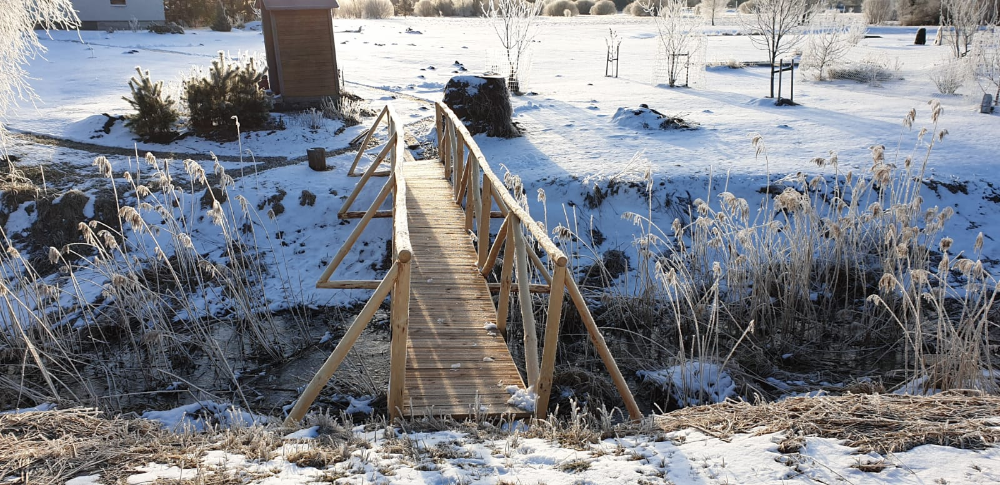
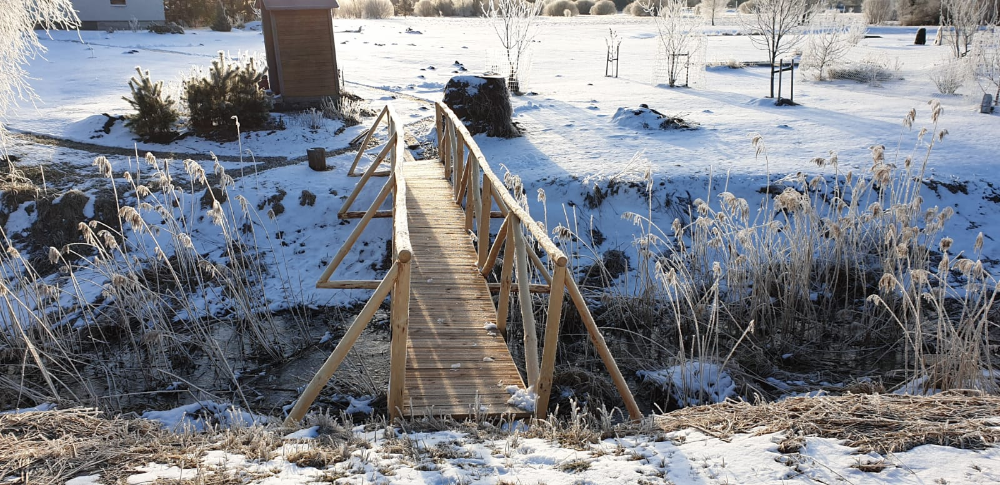

Jaunais tilts Tīnūžos
Jaunais tilts atrodas Tīnūžos pāri grāvim, kas savieno mājas Ķērpīši un Vanaga ligzda.
 

Apraksts
Lai attīrītu mežu, Ķērpīšos ziemā notika koku retināšana un izciršana. Bija radusies nepieciešamība uzcelt tiltu pār grāvi, jo kaimiņu kaķis Kauliņš nāca ciemos pa ceļu. Tas nebija droši, jo uz ceļa ir satiksme un kaķis varētu tikt nobraukts.
Celtniecība
Ziemā tika uzbūvēts tilts no pašu mežā cirstajiem kokiem. Koki tika nocirsti un zari tika sadedzināti. Tad tika sākta tilta karkasa būve šķūņa terasē. Pēc tam tika stiprināta konstrukcija. Gatavais karkass bez grīdas tika pabeigts pēc dažām nedēļām. Tilts tika pārvietots uz vajadzīgo vietu ar kaimiņu palīdzību. Palīgā tika ņemts traktors un automašīna. Video var redzēt kā tilts tika pārvietots no sķūņa uz grāvi.